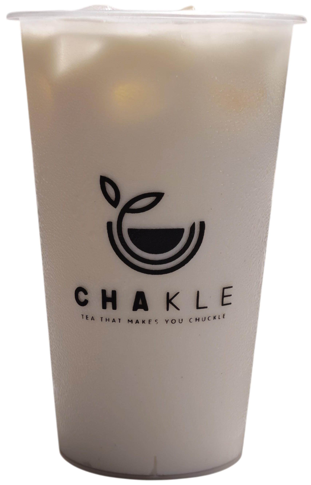

<!doctype html>
<html lang="en">
<head>
  <meta charset="utf-8" />
  <meta name="viewport" content="width=device-width, initial-scale=1" />
  <title>CHAKLE</title>
  <link rel="icon" href="favicon.svg" type="image/svg+xml" />
  <link rel="preload" as="image" href="background.jpg" />
  <style>
    body {
      margin: 0;
      display: grid;
      place-items: center;
      min-height: 100svh;
      background: #000;
      overflow: hidden;
    }
    body::before {
      content: "";
      position: fixed;
      inset: 0;
      background: url("background.jpg") no-repeat center center;
      background-size: cover;
      z-index: -1;
    }
    .content {
      opacity: 0;
      animation: fadeIn 3s ease-out 0.3s forwards;
      text-align: center;
    }
    .logo {
      width: clamp(280px, 80vw, 600px);  /* larger baseline */
      max-height: 70svh;
      margin-bottom: 2rem;  /* tighter gap */
      display: block;
    }

    /* Button wrapper */
    .button {
      display: inline-block;
      background: rgba(255, 255, 255, 0.9);
      padding: 0.4rem 1rem;
      border-radius: 999px;
      box-shadow: 0 4px 14px rgba(0,0,0,0.15);
      border: 1px solid rgba(0,0,0,0.05);
      transition: transform 0.2s ease, box-shadow 0.2s ease;
    }

    /* GrabFood badge: scale relative to logo */
    .button img {
      width: 55%;   /* never bigger than logo */
      max-width: 260px;
      height: auto;
      display: block;
      margin: 0 auto;
    }

    .button:hover {
      transform: translateY(-2px) scale(1.03);
      box-shadow: 0 6px 16px rgba(0,0,0,0.2);
    }

    .overlay {
      position: fixed;       /* stays put like the wallpaper */
      top: 50%;              /* vertically center by its own height */
      left: 50%;             /* start at 50% from the left edge */
      transform: translateY(-50%); /* keep left edge at 50%, only center vertically */
      height: 92svh;         /* almost full screen height, mobile-safe */
      width: auto;           /* let width overflow if needed */
      pointer-events: none;  /* don’t block clicks */
      z-index: 0;            /* above wallpaper (::before), below .content */
    }

    .logo-overlay {
      display: block;
      max-height: 95svh;  /* almost full screen height */
      width: auto;        /* keep proportions */
      margin: 0 auto 0.6rem; /* center horizontally and add a small gap before button */
    }

    @keyframes fadeIn {
      from { opacity: 0; transform: translateY(8px); }
      to   { opacity: 1; transform: translateY(0); }
    }
    @media (prefers-reduced-motion: reduce) {
      .content { animation: none; opacity: 1; }
    }
    /* Portrait phones: logo fills width, button smaller */
    @media (max-width: 480px) {
      .logo {
        width: 80vw;
        max-height: 65svh;
        margin-bottom: 2rem;
      }
      .button img {
        width: 45%; /* smaller relative to logo */
        max-width: 180px;
      }
      .logo-overlay {
        max-height: none; /* remove restriction */
        height: 100svh;   /* can overflow vertically */
      }
    }
  </style>
</head>
<body>
  <!--  -->
  <div class="content">
    
    <a href="https://food.grab.com/sg/en/restaurant/YOUR-RESTAURANT-LINK"
       target="_blank" rel="noopener" class="button">
      
    </a>
  </div>
</body>
</html>
